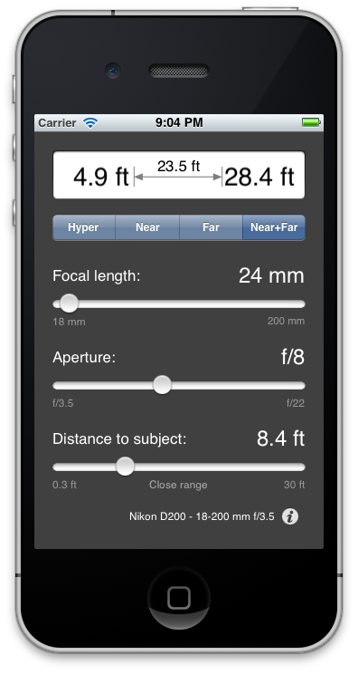

Field Tools is an efficient, easy to use depth of field calculator for photographers working in the field. Using just a few touches, you can quickly calculate hyperfocal, near focus and far focus distances, all from a single screen. App settings are also a single touch away. Features include:
- Large, easy to read result display
- Switch distance type - hyperfocal, near limit, far limit and combined near/far limits - with a single touch
- Sliders for adjusting focal length, aperture and focus distance
- Configure multiple cameras and lenses and switch between them with just a few touches
- Results in meters or feet

What's New in Version 2.2
- Rate of adjustment on focal length and distance sliders varies as you move your finger above or below the slider, giving much greater control over settings.
- Additional circle of confusion pre-sets.
Downloads
Downloads are available from the Apple App Store.
More Information
Wikipedia has several good articles on the theory of depth of field generally, and hyperfocal distance specifically.
For more information about the Field Tools project, visit us on SourceForge.